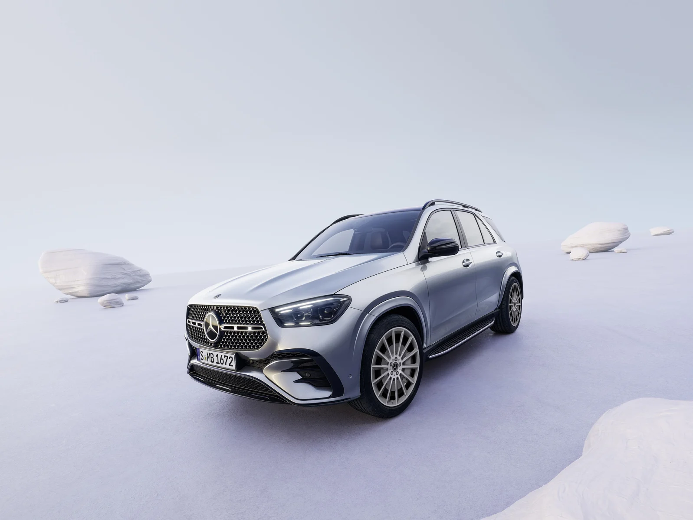
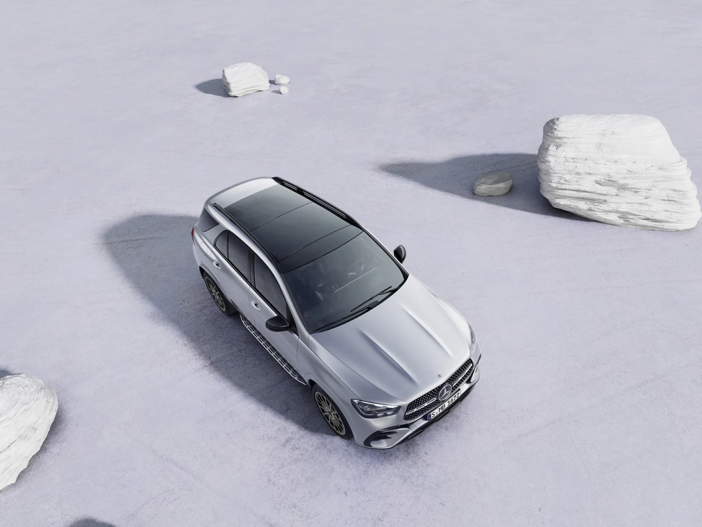
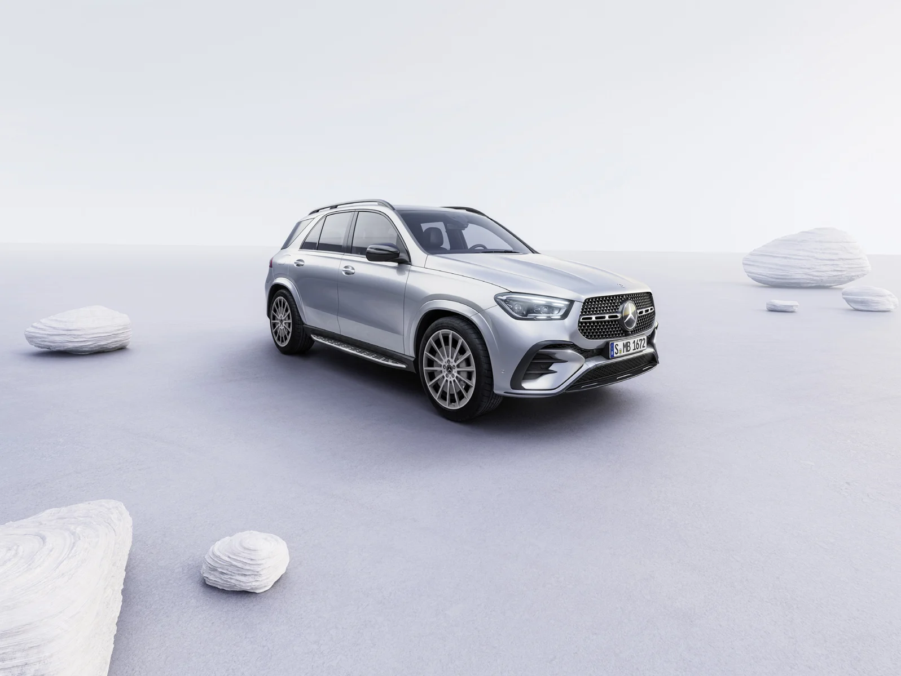
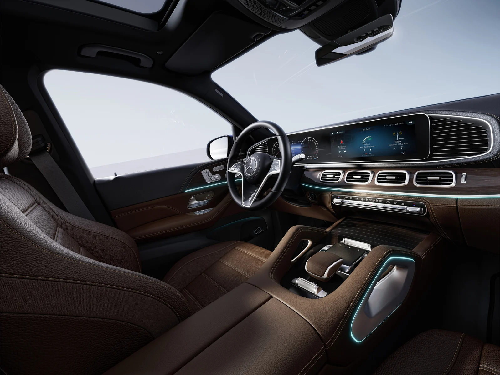
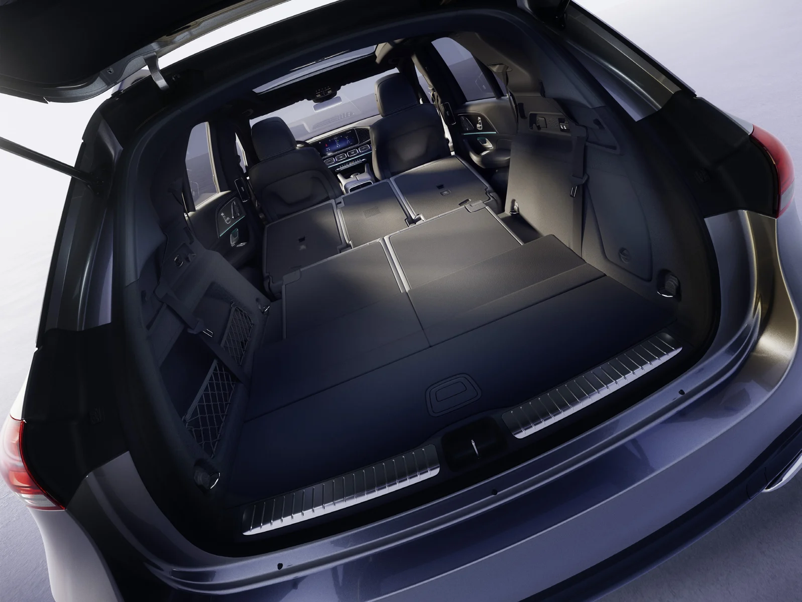

SUV · MY26
GLE
함께 타는 사람까지 생각한 SUV.
GLE의 엔진과 트림을 비교하고 실내 구성, 선택 색상, 현재 구매 조건을 확인하세요. 140주년 에디션도 함께 연결했습니다.
한호만 팀장 · 안내 갱신 2026.09.27
MY26 기준 안내 · 신형 자료 확인 시 보완합니다.

MY26 차량 이미지 · 휠과 장비는 선택 트림에 따라 다릅니다.TRIM & PRICE
트림부터 비교하세요.
차량을 선택하면 구매 정보와 옵션·색상 안내가 함께 바뀝니다.
공식 가격이 확인되지 않은 구성은 별도로 표시합니다.
권장 소비자가: 2026.09.25 가격표 · 부가세 포함. 가격이 아직 확인되지 않은 트림은 이전 연식 가격으로 대체하지 않습니다.
BUYING YOUR GLE
지금 구매 정보.
GLE 350 4MATIC
SPECIFICATIONS
제원 비교.
차체 크기, 엔진과 주행 수치를 같은 연식끼리 비교하세요.
모델별 참고 제원
연식과 모델을 선택해 항목별 수치를 확인하세요. 세부 트림·휠·좌석 구성에 따라 실제 차량과 차이가 있을 수 있습니다.
MY26 · GLE 300 d 4MATIC
- 배기량 (cc)
- 1993
- 구동 방식
- 사륜 구동
- 변속기
- 자동 9단
- 복합연비 (km/ℓ)
- 11.6 (3등급)
- 도심연비 (km/ℓ)
- 11
- 고속도로연비 (km/ℓ)
- 12.5
- CO2 배출 (g/km)
- 165
- 공차 중량 (kg)
- 2380
- 길이 (mm)
- 4925
- 너비 (mm)
- 2010
- 높이 (mm)
- 1780
MY26 · GLE 350 4MATIC
- 배기량 (cc)
- 1999
- 구동 방식
- 사륜 구동
- 변속기
- 자동 9단
- 복합연비 (km/ℓ)
- 8.6(5등급)
- 도심연비 (km/ℓ)
- 7.9
- 고속도로연비 (km/ℓ)
- 9.5
- CO2 배출 (g/km)
- 200
- 공차 중량 (kg)
- 2270
- 길이 (mm)
- 4925
- 너비 (mm)
- 2010
- 높이 (mm)
- 1780
MY26 · GLE 450 4MATIC
- 배기량 (cc)
- 2998
- 구동 방식
- 사륜 구동
- 변속기
- 자동 9단
- 복합연비 (km/ℓ)
- 8.4(5등급)
- 도심연비 (km/ℓ)
- 7.6
- 고속도로연비 (km/ℓ)
- 9.5
- CO2 배출 (g/km)
- 205
- 공차 중량 (kg)
- 2395
- 길이 (mm)
- 4925
- 너비 (mm)
- 2010
- 높이 (mm)
- 1780
MY26 · GLE 450 d 4MATIC Coupé
- 배기량 (cc)
- 2989
- 구동 방식
- 사륜 구동
- 변속기
- 자동 9단
- 복합연비 (km/ℓ)
- 11(4등급)
- 도심연비 (km/ℓ)
- 10.1
- 고속도로연비 (km/ℓ)
- 12.3
- CO2 배출 (g/km)
- 176
- 공차 중량 (kg)
- 2390
- 길이 (mm)
- 4940
- 너비 (mm)
- 2020
- 높이 (mm)
- 1715
MY26 · GLE 450 4MATIC Coupé
- 배기량 (cc)
- 2998
- 구동 방식
- 사륜 구동
- 변속기
- 자동 9단
- 복합연비 (km/ℓ)
- 8.2(5등급)
- 도심연비 (km/ℓ)
- 7.5
- 고속도로연비 (km/ℓ)
- 9.4
- CO2 배출 (g/km)
- 208
- 공차 중량 (kg)
- 2325
- 길이 (mm)
- 4940
- 너비 (mm)
- 2020
- 높이 (mm)
- 1715
카탈로그 참고 제원과 선택한 차량의 연식이 다를 수 있습니다. 미확인 수치는 다른 연식의 확정 수치로 표시하지 않습니다.
BenzDream · 한호만 | 원문에서 최신 안내 확인 ↗
EQUIPMENT
주요 장비부터, 트림별 차이까지.
MY26 주요 사양을 비교합니다.
주요 장비를 먼저 살펴보세요.
기본 장비부터 선택 사양까지 확인하고, 아래에서 다른 트림과 비교하세요.
MY26 · GLE 350 4MATIC
아래 차종 주요 장비도 함께 살펴보세요. 트림별 적용 여부는 구분해 안내합니다.
외관·생활 편의
- 20인치 5 트윈 스포크 휠기본
- 아티코 인조가죽 · 블랙기본
- 메르세데스-벤츠 스타일링기본
MY26 GLE 주요 장비
트림에 따라 기본·선택 적용이 달라집니다. 항목 아래에 표시된 구성도 함께 확인해 주세요.
주행·승차감
- 에어매틱 패키지GLE 300 d 4MATIC, GLE 350 4MATIC · GLE 450 4MATIC AMG Line
시트·공간
- 앞좌석 열선 및 통풍 시트
- 앞좌석 메모리 패키지
디스플레이·오디오
- MBUX 내비게이션 프리미엄
- MBUX 증강현실 내비게이션
- 헤드업 디스플레이
- 부메스터 서라운드 사운드 시스템
실내 편의
- 에너자이징 패키지
- 자동 온도 조절 시스템
- 앰비언트 라이트
- 온도 조절 컵홀더
- 앞좌석 무선 충전 시스템
- 공기 청정 패키지
외관·생활 편의
- 알루미늄 피니시 러닝보드GLE 300 d 4MATIC, GLE 350 4MATIC · GLE 450 4MATIC AMG Line
- 20인치 5 트윈 스포크 알로이 휠GLE 300 d 4MATIC, GLE 350 4MATIC
- 멀티빔 LEDGLE 300 d 4MATIC, GLE 350 4MATIC · GLE 450 4MATIC AMG Line
- 파노라마 선루프GLE 300 d 4MATIC, GLE 350 4MATIC · GLE 450 4MATIC AMG Line
- 키레스 고 패키지GLE 300 d 4MATIC, GLE 350 4MATIC · GLE 450 4MATIC AMG Line
- 파워 클로징GLE 300 d 4MATIC, GLE 350 4MATIC · GLE 450 4MATIC AMG Line
- 21인치 AMG 멀티 스포크 경량 알로이 휠GLE 450 4MATIC AMG Line
고민 중인 두 트림을 비교하세요.
연한 보라색은 확인된 사양의 차이입니다. 확인이 필요한 항목은 차이로 계산하지 않습니다.
MY26 주요 장비 참고
카탈로그에 소개된 장비입니다. 선택 트림의 기본 적용 여부와 주문 조합은 별도로 확인해 주세요.
- 20인치 5 트윈 스포크 알로이 휠
- 멀티빔 LED
- 파노라마 선루프
- 파워 클로징
- 에어매틱 패키지
- 윈도우 라인 트림 스트림
- 21인치 AMG 멀티 스포크 경량 알로이 휠
- 파노라마 선루프
선택 사양은 함께 주문해야 하는 장비나 조합 제한이 있을 수 있습니다. 구매 전 선택 차량의 적용 조건을 확인해 주세요.
BenzDream · 한호만 | 원문에서 최신 안내 확인 ↗
COLOUR & MATERIAL
외장과 실내, 나의 조합.
선택한 트림에 제공되는 색상을 표시합니다.
외장 컬러
폴라 화이트149U · 트림별 확인
옵시디안 블랙197U · 트림별 확인
소달라이트 블루842U · 트림별 확인
하이 테크 실버922U · 트림별 확인
셀레나이트 그레이992U · 트림별 확인
내장 소재·컬러
아티코 인조 가죽, 블랙111A · 트림별 확인
아티코 인조 가죽, 바히아 브라운/블랙124A · 트림별 확인
아티코 인조 가죽, 마키아토 베이지/블랙135A · 트림별 확인
나파 가죽, 블랙951A · 트림별 확인
아티코 인조 가죽, 블랙121A · 트림별 확인
사진은 해당 차종 카탈로그의 원본 이미지입니다. 일치하는 사진이 없는 색상은 색상칩으로 표시하며, 화면 색상과 실제 도장은 다를 수 있습니다.
IN DETAIL
차량을 더 가까이.

GLE · 디자인
GLE · 디자인
GLE · 디자인
GLE · 디자인BENZDREAM ON YOUTUBE
한호만 팀장의 관련 영상.
영상 촬영 당시의 연식·구매 조건이 포함됩니다. 현재 조건은 위 구매 정보에서 확인하세요.
신형 기다리다 고민됩니다… GLE·GLS 140주년 에디션이 매력적인 이유
YouTube에서 보기 ↗신형 GLE, GLS 올연말 출시 예정입니다. 미리 확인하세요 #페리GLE #GLS페리 #비엔나GTE
YouTube에서 보기 ↗EQA, EQB 사상초유 전액 무이자. GLC, GLE 추가 재고 입항까지 #벤츠7월프로모션
YouTube에서 보기 ↗함께 보는 상세 비교.
이전 연식의 상세 장비와 비교 설명도 이어서 볼 수 있습니다.
 한호만 · 벤츠 고양 전시장
한호만 · 벤츠 고양 전시장